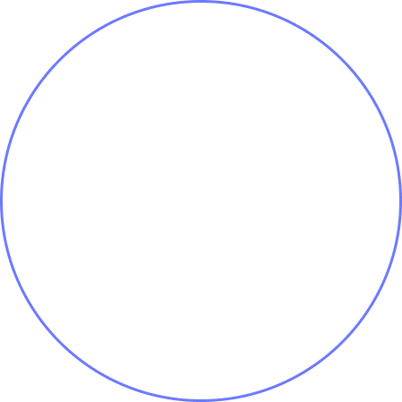
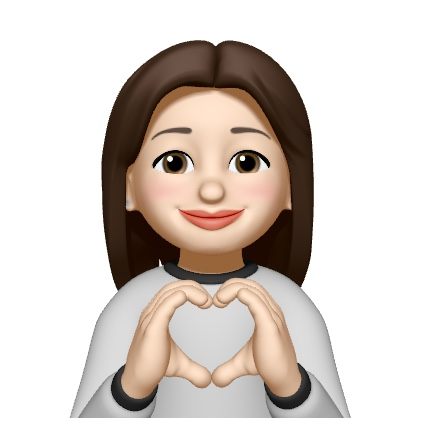

ABOUT


| 추진력,끈기,섬세한 이유림 |
프로필 전화 82+10.2271.1070 이메일 ylee981352@gmail.com 주소 경기도 안산시 |
일 창업 스마트스토어 운영 (Right There) 2020.07 - 2021.12 |
|---|---|---|
| 학력 상명대학교 패션디자인과 2013-2018 졸업 |
수상 창업경진대회 SK 창업경진대회 / 창의상 수상 / 2016.12 |
|
| 기술 Javascript HTML / CSS Git&Github Firebase |
경험 프로그래밍 개인 프로젝트 (웹페이지 및 포트폴리오 사이트 제작 / 2021.07 - 2021.12 동아리 창업 동아리 Weco(위코) / 2016.09 - 2016.12 |